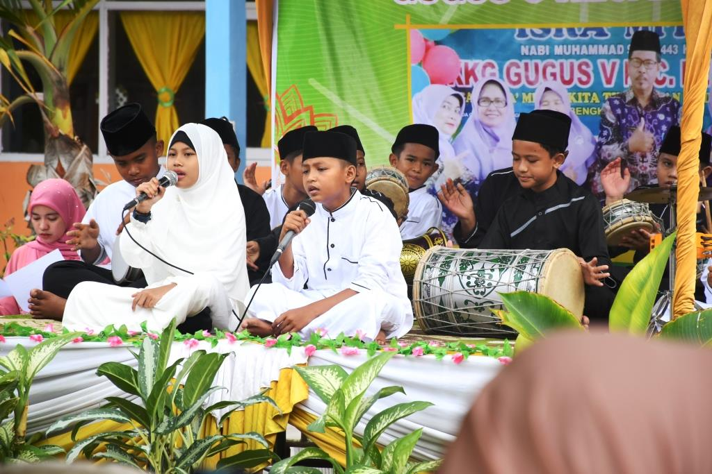
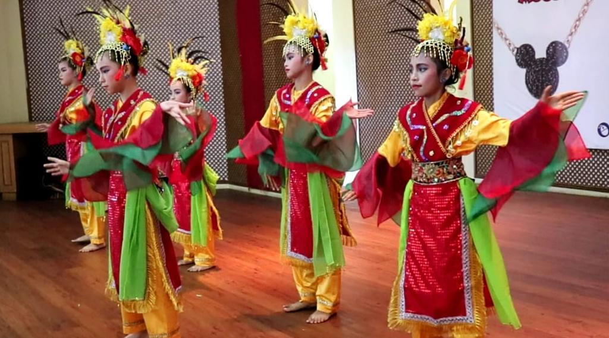

Jadwal Asesmen Pembelajaran & Pembagian Rapor
Diberitahukan kepada seluruh wali murid bahwa evaluasi sumatif akhir semester gasal 2026/2027 dimulai bulan depan.
Membentuk generasi berkarakter Pancasila, cerdas, terampil, dan berakhlak mulia di era Merdeka Belajar.
Profil Sekolah"Pendidikan dasar adalah pondasi pekerti bangsa. Mari bersama wujudkan generasi hebat."
Visi, misi, sejarah, dan identitas SDN Cikuya 3
Tinjauan faktual satuan pendidikan dasar negeri di Kecamatan Solear, Kabupaten Tangerang berdasarkan data pokok pendidikan dan publikasi ilmiah.

SD Negeri Cikuya III merupakan lembaga pendidikan dasar formal berstatus negeri yang berkedudukan di lingkungan pedesaan Desa Cikuya, Kecamatan Solear, Kabupaten Tangerang, Provinsi Banten. Keberadaannya mengemban mandat konstitusional dalam mencerdaskan kehidupan bangsa melalui penyediaan akses pembelajaran tingkat dasar bagi anak-anak usia sekolah di kawasan sekitar.
Sebagai entitas pendidikan yang berada di bawah naungan regulasi pemerintah daerah dan kementerian terkait, sekolah ini menjalankan kegiatan belajar mengajar berlandaskan kurikulum nasional. Kehadiran sekolah menjadi simpul vital dalam menunjang program wajib belajar pendidikan dasar sembilan tahun di wilayah Solear.
Terwujudnya peserta didik yang beriman, berakhlak mulia, cerdas, terampil, dan berkarakter Pancasila.
SD Negeri Cikuya III berdiri pada 1 Januari 1983 di Desa Cikuya, Kecamatan Solear, Kabupaten Tangerang.
Sejak berdiri, sekolah melayani anak-anak di kawasan sekitar dan kini terakreditasi B dengan 13 rombongan belajar.
Informasi kelembagaan resmi yang tercatat pada basis data administrasi pendidikan nasional:
Dokumentasi, ekstrakurikuler, dan prestasi siswa
Ketuk foto untuk memperbesar
Ketuk kartu untuk melihat detail

Seni MarawisPentas Religi
Seni TariTari TradisionalKabar dan pengumuman terbaru dari sekolah
Diberitahukan kepada seluruh wali murid bahwa evaluasi sumatif akhir semester gasal 2026/2027 dimulai bulan depan.
Legalitas dan status mutu sekolah
Peringkat akreditasi ini merupakan hasil penilaian kelayakan program dan satuan pendidikan yang diselenggarakan secara independen oleh Badan Akreditasi Nasional Sekolah/Madrasah (BAN-S/M) berdasarkan pemenuhan 8 Standar Nasional Pendidikan (SNP).
Status Akreditasi: Grade B
SD Negeri Cikuya 3 terakreditasi B (Baik) oleh Badan Akreditasi Nasional Sekolah/Madrasah (BAN-S/M) Provinsi Banten.
Penilaian akreditasi mencakup 4 indikator utama:
Lokasi dan kontak resmi sekolah
Daftar siswa SDN Cikuya 3
Total Siswa: 445 Anak (244 Laki-laki / 201 Perempuan)
| No | NISN | Nama Siswa | Kelas | Jenis Kelamin |
|---|---|---|---|---|
| 1 | 0123456781 | Ahmad Fauzi | 1A | Laki-laki |
| 2 | 0123456782 | Siti Nurhaliza | 1A | Perempuan |
| 3 | 0123456783 | Budi Santoso | 2B | Laki-laki |
| 4 | 0123456784 | Dewi Lestari | 3A | Perempuan |
| 5 | 0123456785 | Eko Prasetyo | 4B | Laki-laki |
Daftar pendidik dan tenaga kependidikan
Total: 14 Pendidik & Tendik
| No | Nama Guru / Pendidik | Jabatan / Tugas | Kualifikasi |
|---|---|---|---|
| 1 | Kepala Sekolah, S.Pd. | Kepala Sekolah | S1 Pendidikan |
| 2 | Guru Kelas 1, S.Pd. | Guru Wali Kelas 1 | S1 Pendidikan |
| 3 | Guru Kelas 2, S.Pd. | Guru Wali Kelas 2 | S1 Pendidikan |
| 4 | Guru PAI, S.Pd.I. | Guru Agama Islam | S1 PAI |
| 5 | Guru PJOK, S.Pd. | Guru Olahraga | S1 Olahraga |